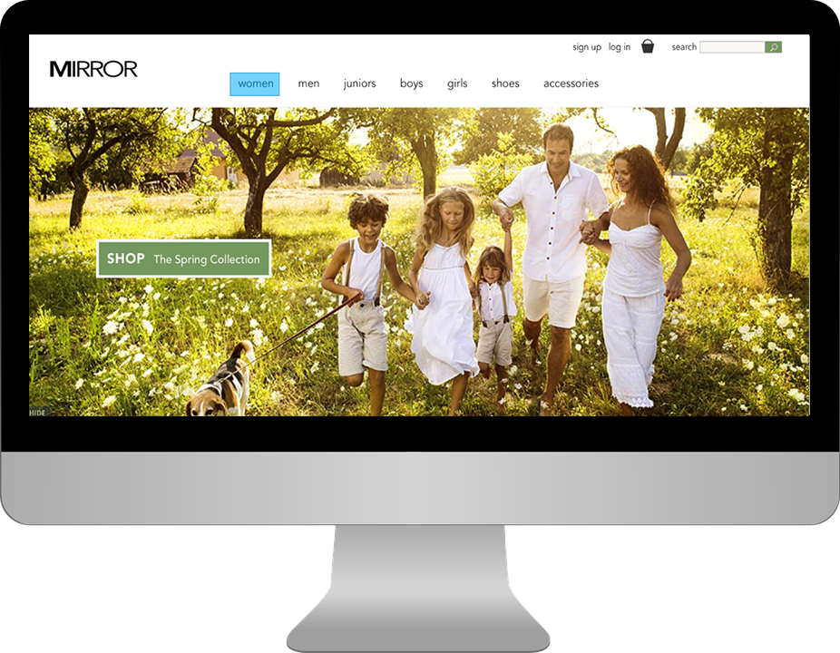

Mirror is a fictional retailer which I designed a site for, for Design Lab.
For this assignment I added a social feature to Spotify's Android app.
Heem is a furniture/interior design furniture app with an AR feature which I designed for Design Lab.

While I may have graduated with a bachelors in English Literature Rutgers University, today I am a UX/UI Designer, and totally immersed in the field. I am a very creative and artistic person who has always loved writing and art. Finding a job in the modern era required me to learn more digital skills; I began my journey into tech by learning html and css. My first real work opportunity was as a front-end developer. The field was evolving dynamically, and still is today.
Excited, I looked for UX/UI bootcamps where I could quickly learn what I needed to, and stumbled upon UX Academy. I am excited about modern trends in UI design, like Google Material Design. I feel that staying up-to-date with these cutting-edge trends is important to modern designers. I love working with visual design and work hard everyday to practice and perfect these skills. I am also open to different parts of the field, like research. I like finding about users desires and motivations to use websites and applications. Having a clear understanding of users roles in websites paves the foundation for design. I work to become a better designer every day, and hope to soon work full-time in the field!